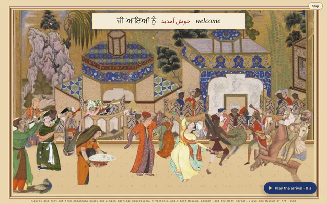
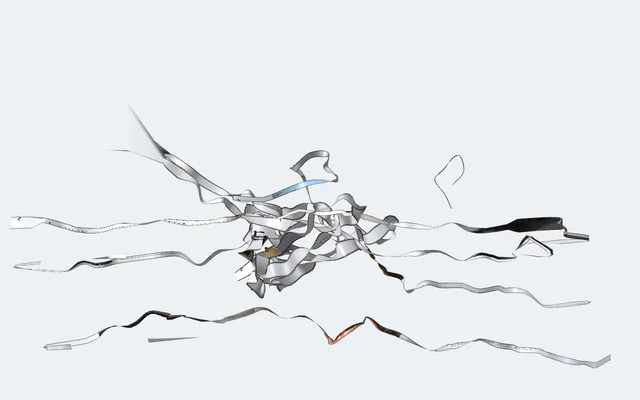
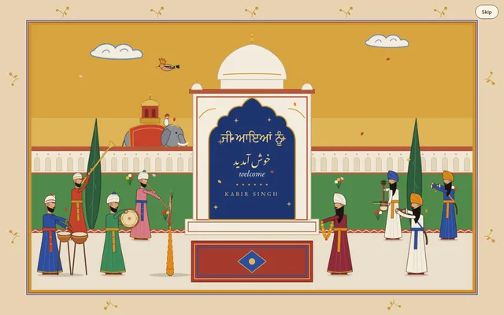
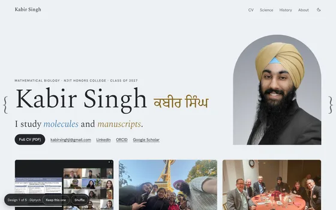
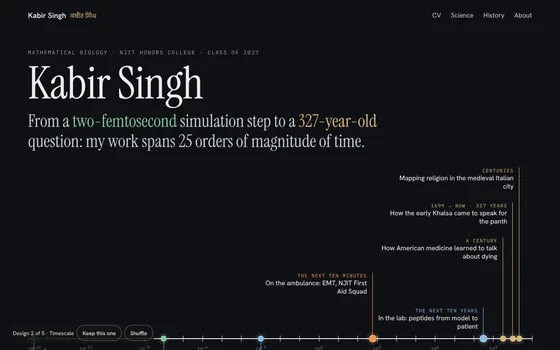
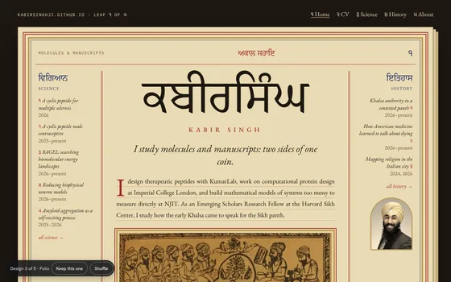
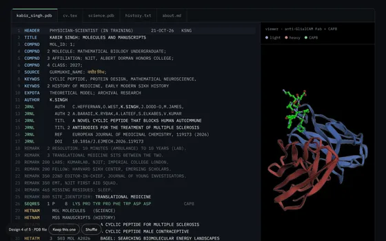
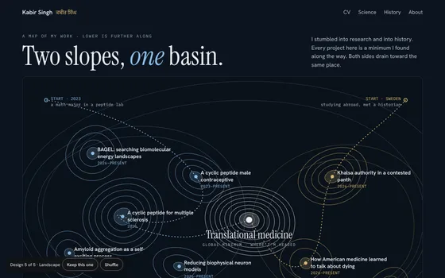

The long way round
for the curious
Arrivalsਆਮਦāmad
One of the three plays, at random, when you arrive from outside the site. Any key, click or scroll skips it. These links play one on demand.

01 / 03[play →]ProcessionFigures cut from Mughal, Persian and Sikh paintings parade before the walls of Surat.
02 / 03[play →]ProteinThe page threaded along the anti-GlialCAM antibody; a simulation unfolds it into the homepage.
03 / 03[play →]DarbarA painted court welcome, drawn from scratch, with a greeting in three scripts.Homepagesਰੂਪrūp
The site has had five homepages. Run your cursor along the shelf.
DESIGN 01 / 05
Diptych
The homepage until October 2026: the portrait, the name in two scripts, molecules and manuscripts side by side.

DESIGN 02 / 05
Timescale
From a two-femtosecond simulation step to a 327-year-old question, on one axis of time.

DESIGN 03 / 05
Folio
The homepage as a manuscript folio: a Gurmukhi title, ruled margins, glosses down the sides.

DESIGN 04 / 05
PDB file
The homepage written as a Protein Data Bank file, with the structure turning beside it.

DESIGN 05 / 05
Landscape
Two slopes, one basin: each project a hollow on one energy landscape.

Playਖੇਡkheḍ
- CharactersWaris, the Cat, the Maharaja and friends peek in from the edges of every page for a second and a half. Catch them.
- The beatYour cursor draws a heartbeat. An ECG trace follows its path and fades, and a small monitor travels with it, keeping a rate that climbs the faster you move. Rest the cursor and click the monitor to send it all away; the switch below brings it back.
- The proteinThe whole CV, folded by what each entry has in common with the others. On the CV →